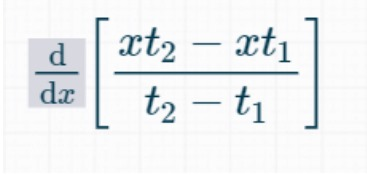

Concepto
La derivada de una función en un punto dado representa la velocidad o la tasa de cambio instantánea de esa función en ese punto. En otras palabras, te dice cuánto cambia el valor de la función cuando te desplazas una cantidad infinitesimalmente pequeña a lo largo del eje x en ese punto específico. Si la derivada es positiva, la función está aumentando en ese punto; si es negativa, está disminuyendo; y si es igual a cero, la función alcanza un máximo o un mínimo en ese punto.
Puedes imaginar la derivada como la pendiente de la recta tangente a la curva de la función en ese punto. Cuanto más empinada sea la tangente, mayor será el valor absoluto de la derivada en ese punto, lo que indica un cambio rápido en la función. Por otro lado, si la tangente es casi horizontal, la derivada será cercana a cero, lo que sugiere un cambio lento en la función.
Algunos usos
Análisis de funciones matemáticas
La derivada se utiliza para estudiar el comportamiento de funciones matemáticas, identificar máximos y mínimos, determinar la concavidad de una curva y entender la tasa de cambio en diversas situaciones.
Economía
La derivada se aplica en economía para analizar funciones de oferta y demanda, calcular elasticidades de precios y comprender la dinámica de los mercados.
Ingeniería
La derivada se aplica en la ingeniería para diseñar sistemas de control automático, analizar la dinámica de sistemas mecánicos y eléctricos, y resolver problemas de transferencia de calor y fluidos.

Medicina
La derivada se utiliza en la modelización de sistemas biológicos y fisiológicos, como la difusión de medicamentos en el cuerpo o la propagación de enfermedades.
Ciencias de la computación
La derivada se utiliza en algoritmos de optimización, procesamiento de imágenes y reconocimiento de patrones en campos como la visión por computadora y el aprendizaje automático.
Uso de las derivadas en la física
La velocidad es una magnitud física que describe el cambio de posición de un objeto en relación al tiempo. En términos matemáticos, la velocidad se define como la derivada de la posición respecto al tiempo.
Si tenemos una función de posición x(t), donde x representa la posición y t representa el tiempo, la velocidad promedio entre dos instantes de tiempo t1 y t2 se calcula mediante la fórmula:
- v_promedio = 
- La velocidad instantánea es la velocidad de un objeto en un punto específico y en un instante de tiempo particular. En contraste con la velocidad promedio, que se calcula entre dos puntos en un intervalo de tiempo, la velocidad instantánea se refiere al valor de la velocidad en un momento exacto.
- Matemáticamente, la velocidad instantánea se obtiene mediante la derivada de la posición respecto al tiempo. Si tenemos una función de posición x(t), donde x representa la posición y t representa el tiempo, la velocidad instantánea se calcula como la derivada de x(t) con respecto a t:
- Esta derivada representa la tasa de cambio de la posición en un instante de tiempo específico. La velocidad instantánea puede ser positiva, negativa o cero, dependiendo de la dirección y sentido del movimiento.


Derivadas compuestas
Regla de la cadena
Concepto
Se utiliza para encontrar la derivada de una función compuesta. Cuando tienes una función que está formada por la composición de dos o más funciones, la regla de la cadena te permite calcular la derivada de esa función compuesta en términos de las derivadas de las funciones individuales que la componen.
Ejemplo